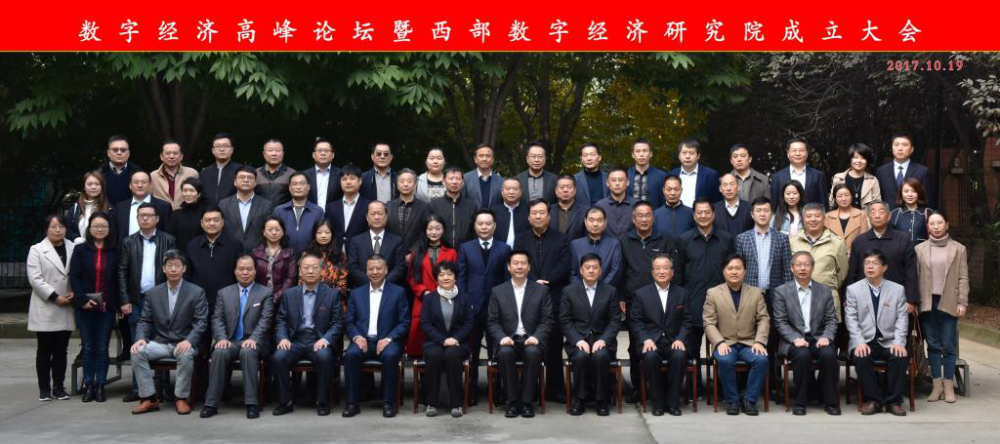

西部数字经济研究院
西部数字经济研究院于2017年10月19日成立，是经陕西省委网信办批准、西安邮电大学发起设立，以“立足数字经济，服务区域发展”为宗旨，以“诚信、谦卑、服务、卓越”为价值观，面向新技术、新产业、新业态、新应用，以前瞻、客观、开放、独立、严谨、务实的精神，提供科学研究、政策咨询、成果转化、人才培养、产业孵化、基层指导、智库建设等数字经济不同视角与深度的产品不服务，为我省乃至西部地区拓展经济发展新空间、培育经济增长新动力提供支撑。
研究院是政产学研融合的创新型组织，通过集研究、投资、整合、带动、创新、孵化为一体的全方位产业融合创新运营新模式，努力打造在数字经济发展领域，建设成为国内有影响、西部一流的战略咨询与科学决策的信息库、知识库、思想库，为助推我省和西部地区追赶超越做出积极贡献。
 陕西省委宣传部部长庄长兴与陕西省委宣传部副部长、省委网信办主任孙琳共同为西部数字经济研究院揭牌
陕西省委宣传部部长庄长兴与陕西省委宣传部副部长、省委网信办主任孙琳共同为西部数字经济研究院揭牌